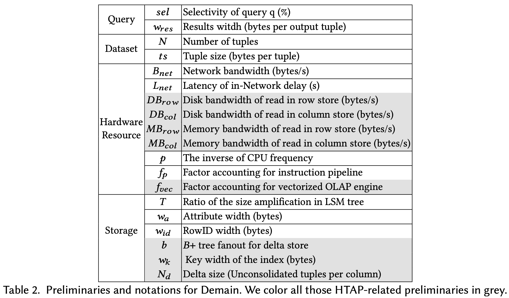

원본 논문
- 이 글은 Rethink Query Optimization in HTAP Databases, SIGMOD’24 논문을 읽고 정리한 글입니다.
- 별도의 명시가 없으면, 본 논문과 강의에서 그림을 가져왔습니다.
5.0. Prologue
Arbitrary section
- 그냥 5.1. 직전의 내용이고, 논문에는 별도 section 으로 numbering 되어 있지는 않습니당
- Section 5 에서는 query plan selection 에 있어서 delta storage 가 미치는 영향 (즉, data dynimicity) 을 고려한 cost model 인 Demain (Delta Main) 에 대해 설명한다.
- 물론 여러 시스템마다 delta storage 를 어떻게 구성할지는 다르기 때문에, 이와 동일한 cost model 이 다른 시스템에도 곧바로 적용될 수 있다는 말은 아니다.
- 다만, 본 논문에서 사용하고 있는 MetisDB 를 기반으로, delta storage 가 미치는 영향을 어떻게 모델링할 수 있는지에 대한 예시라고 할 수 있다.
5.1. Model Preliminaries

- Modeling 에서는 위와 같은 약어를 사용한다.
- 여기서 한가지 짚고 넘어갈 것은, disk 와 memory bandwidth 가 row store 와 column store 에 따라 구분되어 있다는 것이다.
- 이것은 각각의 row / column store 가 별도의 machine 에서 작동하기 때문에 각각에 대해 bandwidth 가 다를 것이기 때문이다.
- 또한, (뒤에서도 볼 수 있겠지만) random access 를 하냐 sequential access 를 하냐에 따라서도 bandwidth 가 달라지기 때문에 비록 위 표에는 적혀있지 않지만 이것들 또한 구분짓는다고 한다.
- 그리고 여기서 modeling 하는 query 는 range scan 이다. 즉,
SELECT col1
FROM table
WHERE col BETWEEN a AND b;- 와 같은 형태의 query 에 대해 어떻게 cost 를 구할 것인지를 설명한다.
- 또한, MetisDB 에서는 row store 로써 LSM 을 사용하고 있기 때문에, 이에 대한 고려도 필요하다.
- 우선 LSM 에서는
DELETE를 tombstone 으로써 대신하고, 이것 이외에도 읽고 버려야 할 데이터들이 있을 수 있다 1. 하지만 이러한 tombstone 은 전체 data 들 중에서 그리 많지 않기 때문에 이놈들은 model 에 포함하지 않는다. - 또한, LSM 을 사용함으로 인해 발생하는 read amplification 이 있을 수 있는데 2, 이것은 로 표시한다.
- 즉, LSM 에 실제 저장된 entry 의 사이즈와 tuple 의 원래 사이즈 간의 크기 비율이 인 것.
- LSM 에 실제 저장된 entry 의 사이즈는 Global Meta Service 에서 추적한다고 한다.
- 우선 LSM 에서는
5.2. Modeling Access Path In HTAP
Arbitrary section
5.2.X는 논문에 별도로 numbering 되어 있지는 않고, 주인장이 임의로 붙였습니다.
5.2.1. Network I/O Cost
- 우선 storage node 에서 compute node 로 데이터를 땡겨와야 하기 때문에, Network I/O cost 가 당연히 있다. 이것에 대해 생각해 보자.
- 우선 전체 record 의 개수를 이라고 해보자.
- 만약 이 query 의 selectivity (즉, 전체 record 중에 몇개의 record 를 고르느냐) 가 라면, MetisDB 에서는 predicate pushdown 으로 storage node 에서 filtering 을 하기 때문에, network 를 타고 와야 하는 record 의 개수는 다음과 같다.
- 또한, 최종적으로 network 를 타고 전달되는 record 한개의 사이즈(byte) 를 라고 한다면, network 를 타고 와야 하는 총 데이터 사이즈는 다음과 같다.
- 그럼 이놈을 network bandwidth 로 나누면, 이놈을 전송하는 데에 걸리는 시간 (즉, Transmission Delay) 가 나오게 된다.
- 그리고 network 에 기본적으로 깔려있는 latency (In-network Delay) 3 인 을 더하면 network cost 는 다음과 같다.
- 참고로, network 환경에서는 packet queing delay 4 가 있을 수 있는데, 이놈들은 modeling 에서는 무시한다.
5.2.2. Row Scan
- 우선, scan 을 할 때는 다음의 세 과정이 이루어 진다.
- 우선 disk 에서 읽어와 memory 로 올려야 하고
- Memory 에 있는 것을 cache 로 올려야 하고
- Cache 에 있는 것을 CPU cycle 을 소모해 scan 을 해야 한다.
- 당연히 이놈들은 pipelining 되기 때문에 가장 오래걸리는 놈인 disk I/O 에 bound 되게 된다. 따라서 row scan 뿐 아니라 앞으로의 modeling 에서 disk 에 접근해야 할 때는, disk I/O latency 를 기준으로 cost 를 산정한다.
- 그럼 한번 계산해 보자. 우선 전체 record 개수인 에 대해서,
- 각 record 의 tuple size (byte) 인 를 곱하면 row store 에 있는 data size 가 나온다.
- 다만 위에서 network cost 를 계산할 때는 를 사용했는데, 왜 여기서는 를 사용하냐고 생각할 수 있는데, 저장되어있는 tuple 의 크기와 output 으로 나가는 tuple 의 크기가 항상 같을 수는 없기 때문으로 이해하자.
- 그리고 row store 은 LSM 을 사용하기 때문에, 위에서 말한대로 만큼의 read amplification 이 발생한다. 그럼 이놈을 곱해주면 다음과 같다.
- 그럼 여기에 row store 에 대한 disk sequential read bandwidth 를 나눠주면 row store read latency 가 나온다.
5.2.3. Index Scan
- Index scan 을 할 때는 (1) 우선 index leaf node 에 대해 sequential scan 을 하고, (2) 읽어야 할 row id 를 추려서 disk 에서 읽어온다. 그럼 이때의 read latency 를 구해보자.
- (1) 에서는, index leaf node 를 sequential scan 하므로, row scan 에서와 동일한 수식을 사용하되, index 의 key-value 만 읽으면 되므로 대신 key 의 크기인 와 value 인 row id 의 크기인 만큼만 읽으면 된다. 따라서,
- 그리고, index 를 통해 읽어야 할 row id 를 다 추렸다 하더라도 우선 모든 row 에 대해 row id 만을 읽어서 이게 원하는 row 인지 아닌지는 알아야 한다 5. 따라서 모든 row 에 대한 row id 를 읽는 latency 는 다음과 같다.
- 여기서 random I/O bandwidth () 인 이유는 row id 만을 읽기 때문에 sequential scan 이 아니기 때문이다 6.
- 또한 이렇게 해서 선택된 row 들을 실제로 읽기 때문에, selectivity () 를 고려하면 선택된 row 를 읽는 latency 는 다음과 같다.
- 따라서 이것을 모두 종합하면 다음과 같다.
5.2.4. Column Scan on Column Store
- Column store 에서 column scan 을 할 때는, 크기 인 column 에 대해 개를 sequential 하게 읽어야 하므로, 이에 대한 latency 는 다음과 같다.
- 이때에는 LSM 을 읽는 것이 아니므로, 당연히 read amplification 인 은 당연히 빠진다.
5.2.5. Delta Scan
- MetisDB 에서는 in-memory delta store 에 log 들이 append 가 되고, 이 log 들을 빠르게 찾아가기 위한 B+Tree 로 구성되어 있다.
- 이때, 이 B+Tree 를 traversal 하는 latency 부터 살펴보자.
- 따라서, 개의 entry 가 들어 있는 delta store 에 대해, B+Tree 의 fanout 이 라면, 이 tree 의 height 는 다음과 같다.
- 그럼 이 tree 를 traversal 할 때 방문하는 node 는 (root node 를 고려하면) 다음과 같다.
- 그리고 node 내에 개의 child 가 있을 때, 이것을 binary search 로 탐색하여 child 를 선택한다면 probe 해야 할 child 의 수는 대략 일 것이다. 따라서,
- 다음에는 하나의 child 를 probing 할 때 소모되는 CPU latency 를 생각해 보자. 우선, CPU 1 cycle 에 걸리는 시간 (즉, CPU frequency 의 역수) 를 라고 하고, child probing 할 때 1 cycle 만에 실행되지는 않기 때문에 이때 소모되는 cycle 의 수를 라고 한다면 child probe 에 필요한 CPU latency 는 다음과 같다.
- 또한, child probe 에 필요한 memory access latency 는 memory bandwidth () 의 역수일 것이다. 따라서,
- 결과적으로 child probe 에 대한 CPU latency 와 memory access latency 를 더하면 child probe latency 가 나올 것이고, 따라서 모두 종합해 보면 다음과 같다.
- 그리고, 이 B+Tree 에 있는 entry 에 대해 column store 에 적용을 해서 읽어야 할 것이다. 따라서, 우선 delta store 에 있는 개의 entry 에 대해, Index scan 에서와 비슷한 이치로 여기에 있는 애들애 대한 모든 row id 를 조회를 하고 selectivity 비율에 따라 tuple 에 접근할 것이다. 따라서,
- 여기서 가 아니라 인 이유는 delta store 에는 columnar 로 저장되는게 아니라 full row 가 저장되기 때문이다 7.
- 그래서 delta store 에 대한 총 latency 는 다음과 같다.
5.2.6. Column Scan in HTAP
- 그래서 column scan 에 대한 cost 를 종합해 보면 다음과 같다.
- 다만, plan selection 에는 위에서 말한 Row scan, Index scan, Column scan 셋을 비교한다. 왜냐하면 predicate pushdown 을 하기 때문에 결국에 compute node 로 전달되는 data 의 사이즈는 세 방법 모두 동일하기 때문에 network IO cost 는 동일하기 때문.
5.3. Access Path Selection
- 위에서의 수식들을 기반으로, 어떤 access path 가 어떨 때 유리할지 생각해 보자.
- 일단 column store 는 row store 에 비해 I/O size 가 작다는 장점이 있다.
- 위의 수식에서 와 을 비교해 보자.
- 그럼 다른 점이 (대역폭을 제외하면) row store 에서 였던 것이 column store 에서는 가 된다.
- 근데 는 당연히 1보다 크고, 는 record 전체 사이즈이기 때문에 당연히 column 하나의 사이즈인 보다 크므로 column store 로 가면 I/O 는 당연히 줄어든다.
- 따라서 이 효과는 table 에 column 의 개수가 많고, query 에 포함된 column 의 수가 적을수록 극대화된다.
- 그리고 index scan 은 selectivity 가 작을수록 강점을 가진다.
- Selectivity 가 작으면 필요한 row 가 적고, 어떤 row 를 봐야하는지를 index 를 통해 빠르게 알 수 있으므로 이런 경우에는 column scan 보다 훨씬 좋은 성능을 낸다.
- 반대로 selectivity 가 크다면, 많은 양의 row 를 tuple 전체에 대해 읽어야 하고, 또한 index 접근의 overhead 도 있기 때문에 row scan 이나 column scan 보다도 훨씬 안좋아진다.
- 따라서 전통적으로는 특정한 threshold 를 두어 selectivity 가 이것보다 작을 경우에만 index scan 을 하게 한다.
- 그럼 row scan 은 언제 좋을까. 위의 Demain 에서 알 수 있다시피, column scan 에는 delta scan 비용이 포함되어 있다.
- 그렇다는 것은 만약에 delta scan overhead 가 커진다면, 즉, write heavy 상황이어서 delta 의 양이 엄청 많아진다면, column scan 보다 row scan 을 하는 것이 오히려 더 좋다는 것이다.
- 그래서 종합해 보면 다음과 같다.
- 만약에 selectivity 가 작다면, index scan 을 선택하는 것이 합리적이다.
- 만약에 selectivity 가 크고 delta 의 양이 많아 이것으로 인한 overhead 가 columnar 의 I/O 감소를 압도한다면, row scan 을 선택하는 것이 합리적이다.
- 만약에 그렇지 않다면, column scan 을 하는 것이 합리적이다.